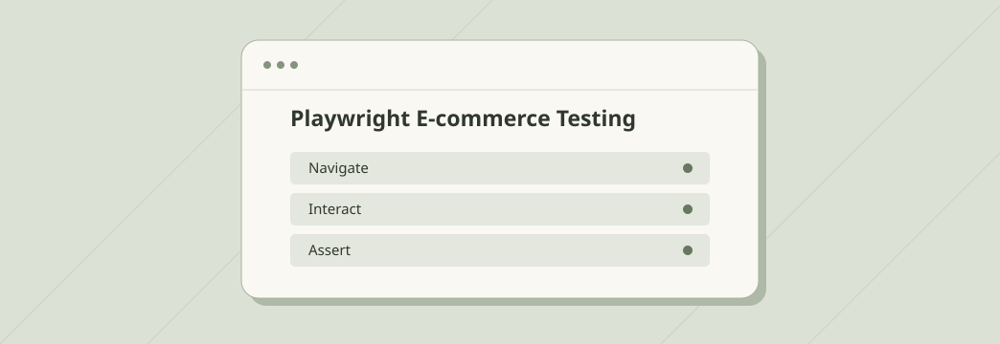
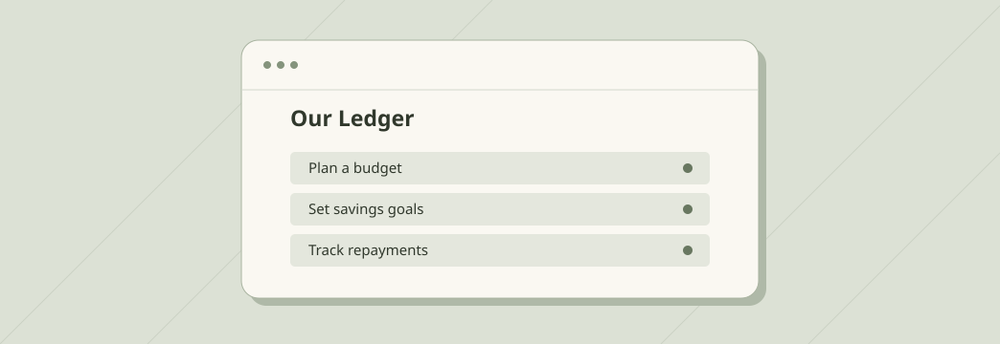
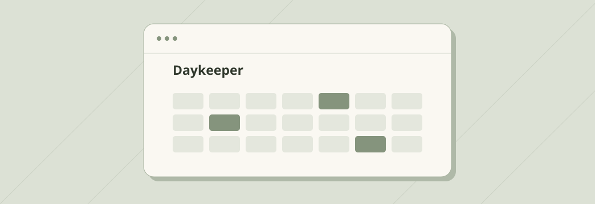
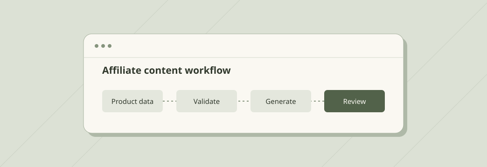

01 / QA AUTOMATION
Playwright E-commerce Testing
Browser tests for critical shopping journeys, with traces and reports to investigate failures.
Read case studyAI TEST ENGINEER · CEBU, PHILIPPINES
I’m Mack John Dela Cruz. I evaluate conversational AI and voice agents, automate browser and API checks, and build tools for everyday use.
Explore my work01 / PORTFOLIO

01 / QA AUTOMATION
Browser tests for critical shopping journeys, with traces and reports to investigate failures.
Read case study
02 / PERSONAL FINANCE
Manage income and bills, save toward shared goals, and track loans and repayments.
Read case study
03 / PERSONAL CALENDAR
A private calendar for keeping your personal schedule in one place.
Read case study
04 / AI WORKFLOW AUTOMATION
An n8n workflow that turns product data into affiliate content drafts for TikTok, Facebook, and Threads.
Read case study02 / PROCESS
I built 11 automated scenarios across four test areas. Page objects keep selectors and interactions reusable. GitHub Actions runs the suite, and screenshots, traces, and reports help pinpoint where a run failed.
Python · Playwright · Pytest · GitHub Actions
View repositoryI used whole centavos for calculations and built a repayment history that records corrections. Expiring invitations let people share specific goals or loans while keeping the rest of their finances private.
Next.js · TypeScript · Supabase
Open Our LedgerI built Daykeeper around a personal calendar that belongs to the signed-in account. The public entry point brings sign-in, account creation, and password recovery into one place.
Open DaykeeperI built an n8n workflow that checks required fields in a Google Sheets product queue before asking Gemini to generate structured drafts. JavaScript parses and normalizes the output, then the workflow writes it back to the same row and marks it ready for human review.
n8n · Gemini · Google Sheets · JavaScript
View repository03 / ABOUT
I’m an AI Test Engineer at Xerox Philippines and a licensed Electronics Engineer. I previously worked in quality engineering at Accenture. My work covers conversational AI evaluation, regression testing, and browser and API automation.
Download résumé04 / CONTACT